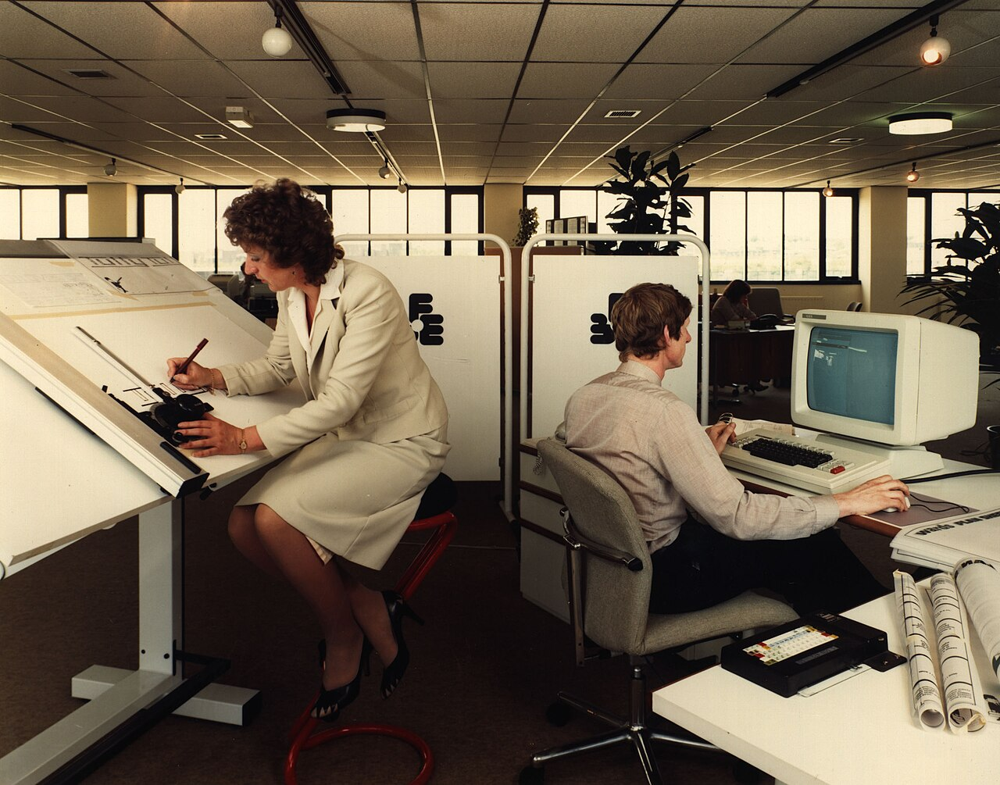

Antes de la web

Así se trabajaba en muchas oficinas hace algunas décadas: mucho papel, archivos físicos y computadoras que no estaban conectadas entre sí. Nuestra forma de trabajar al comienzo no era muy diferente.
Mz Distribuciones nació como un emprendimiento familiar con una sola camioneta y una pequeña bodega. Al inicio repartíamos productos de abarrotes a unas cuantas tiendas del barrio y todo el control se hacía a mano: facturas en papel, pedidos por llamada y un cuaderno para las cuentas por cobrar.
Con el crecimiento de clientes ese sistema dejó de funcionar. Se perdían pedidos, había errores en el inventario y los clientes no sabían cuándo iba a llegar su mercadería. Ahí empezamos a usar herramientas web.

Así se trabajaba en muchas oficinas hace algunas décadas: mucho papel, archivos físicos y computadoras que no estaban conectadas entre sí. Nuestra forma de trabajar al comienzo no era muy diferente.
Hoy usamos un catálogo publicado en internet, recibimos pedidos desde formularios y WhatsApp Business, emitimos facturación electrónica y llevamos el inventario en un sistema en la nube. Los cambios más notorios fueron:
Abastecer a los pequeños y medianos negocios con productos de calidad, a buen precio y con entregas puntuales, apoyándonos en la tecnología para dar un mejor servicio.
Ser una distribuidora reconocida en la región por su atención cercana y por facilitar a los tenderos el paso al comercio digital.